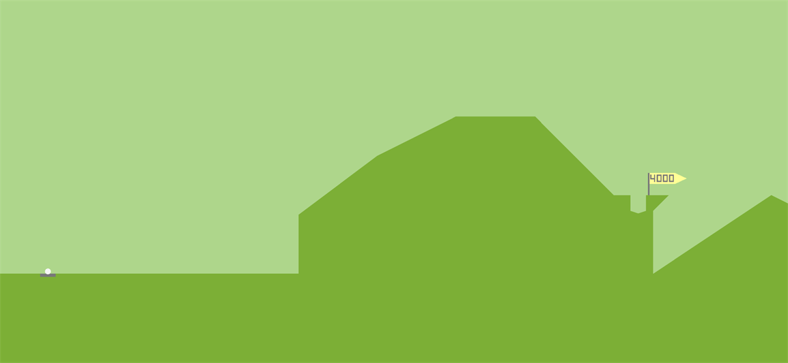

2024-08-08

After an agonizing 51 strokes, I sank my 4,000th hole in Desert Golfing. With little fanfare, the 4,000th pin disappeared, the screen panned to the right, and the pin for hole 4,001 popped into existence. My moment of triumph passed without a trace, as if it had never happened at all.
Desert Golfing is a deeply minimalist mobile game. It omits background music, leaderboards, or any indicators of progress outside of your total strokes and the shifting color of the dunes. Like real golf, you are tasked with sending a ball to its home. But the fairway is a literal desert with no end nor any way to reset your progress. The game continues forever: a series of holes in the desert stretching into infinity.
Compared to colorful games like Candy Crush or Angry Birds that offer endless hits of dopamine, Desert Golfing is the equivalent of watching paint dry. Your stroke count ticks ever higher over time, a permanent reflection of your skill or lack thereof. Nonetheless, I play it every day because of its longevity and how it deftly embodies the philosophy of mindfulness.
To be clear, I’m not a Zen monk. I wouldn’t make a particularly good one, either. I’m not sure I could go ten minutes without speaking, never mind months. The year before my daughter was born, I was able to meditate daily with the help of Headspace. But since Tabbi’s arrival, I’ve been a delinquent practitioner of meditation at best. Still, I study Zen in fits and starts and have come to appreciate its principles and sayings. My favorite goes something like this:
“Before enlightenment, you will chop wood and carry water. After enlightenment, you will chop wood and carry water.”
I admire the phrase’s symmetry and purposeful repetition. Despite my basic grasp of Eastern philosophy, I appreciate how elegantly the motto expresses the core principles of living in the present by embracing the tedious tasks we encounter in our day-to-day lives.
For example: If I’m weeding my garden, I am focused on the smell of the dirt, the feel of the weeds’ roots giving way as I rip them out, and the satisfying way I can pitch them into the compost pile because I am lazy. If I’m fly fishing, I’m focused on the feel of the cork grip in my hand, the rod tip bending as I cast, and the way my fly lands on the water’s surface with barely a ripple. Even if you’ve attained enlightenment, you won’t stop appreciating these details instead of worrying about things outside your control. That is the core of Zen.
To put a point on all this: our lives are increasingly shaped by screens, be they our phones, laptops, or TVs. The software running these devices is designed to never let go of our attention. It can feel inescapable, even suffocating sometimes. It is in this context that Desert Golfing proves to be something more than just another way to kill time while racking up meaningless points or gems or achievements.
Desert Golfing alone will not help you attain enlightenment. But every minute I’ve spent staring at its barren dunes instead of doom scrolling, compulsively checking social media, or chasing cheap dopamine hits seems like a small victory for my overall mental health. Or put another way:
“Before enlightenment, you will swipe to get the ball in the hole. After enlightenment, you will swipe to get the ball into the hole.”
Desert Golfing is available on iOS, Android, MacOS, and Windows for $1.99-ish.